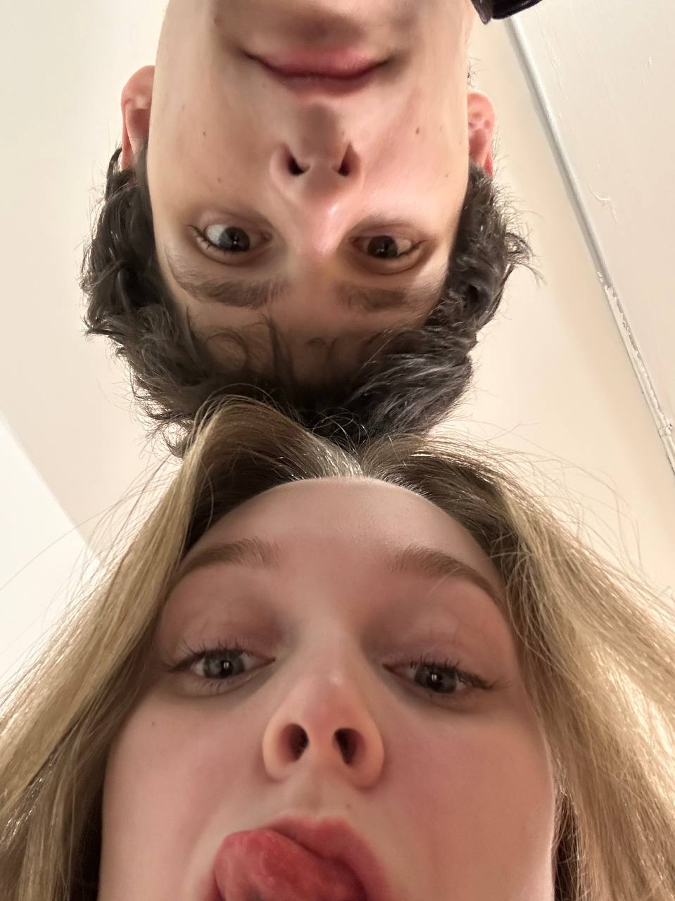
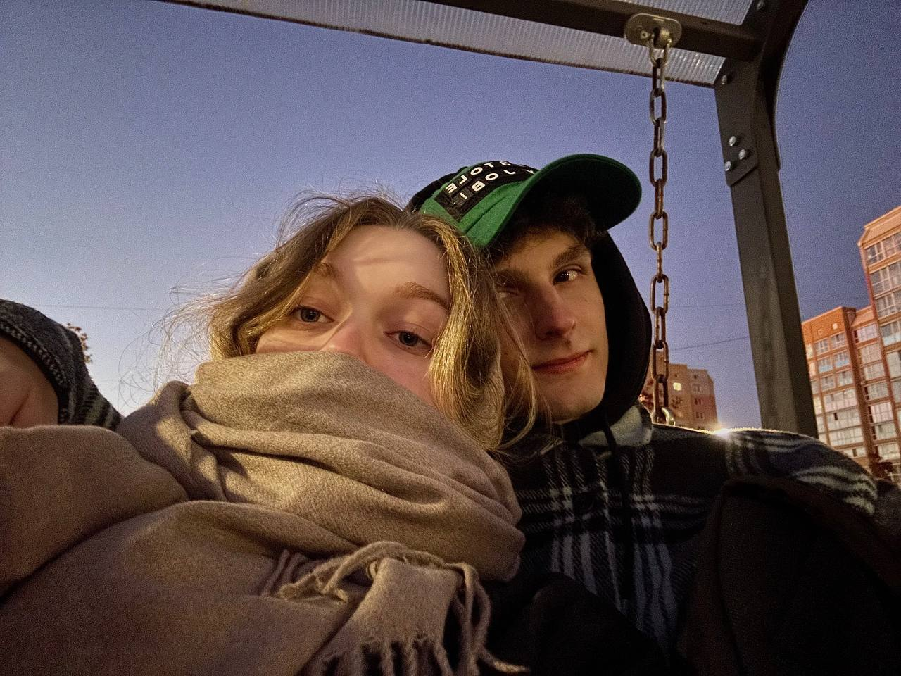
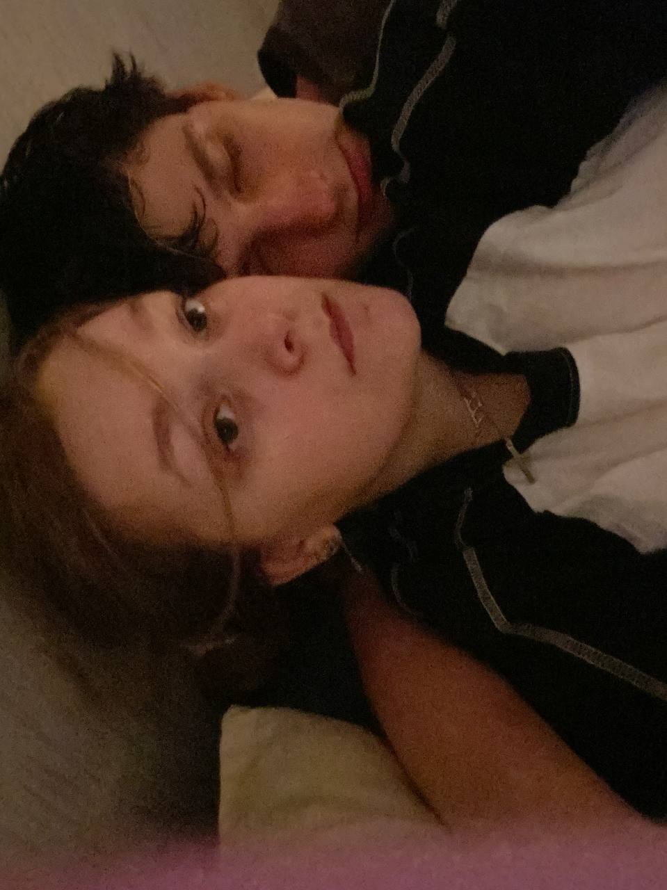
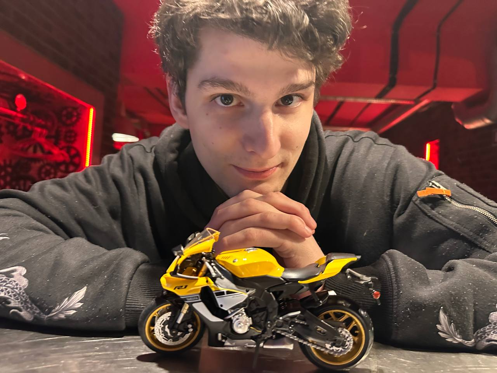
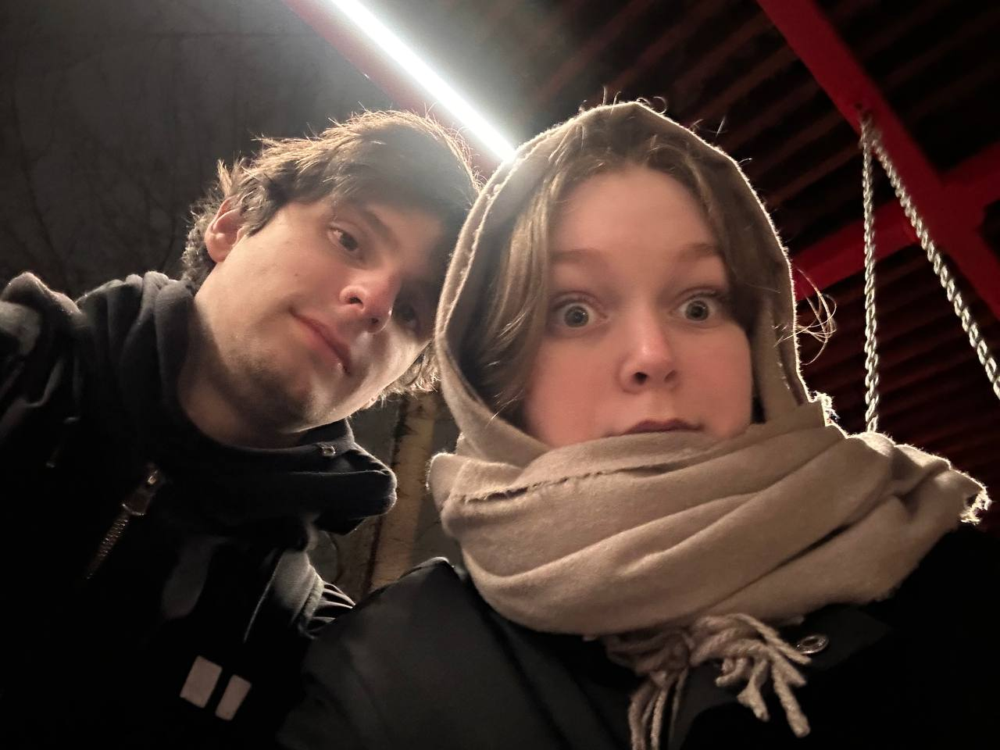

Поздравляю тебя с Новым годом!
Сложно назвать 2025 год хорошим — как минимум пока что.
В нём произошло много неприятных событий, как глобальных, так и личных.
Но, несмотря на это, он был богат и хорошими моментами.
Поделюсь парой из них.
2025 год начался с того, что я наконец-то собрал себе игровой компьютер
и тем самым закрыл детскую мечту.
В 2025 году я добился права на АГС.
Да, это, конечно, всего лишь меньшее зло из двух,
но я не обязан идти в армию.
2025 год — это год исполнения большой цели и мечты:
получение прав на мотоцикл и его покупка.
Но одно событие в 2025 году было особеннее других.
В этом году я встретил тебя!
Это самый счастливый момент года.
Я очень сильно тебя люблю
и хочу, чтобы в 2026 году (да и во все остальные года)
мы делали друг друга ещё счастливее
и любили только сильнее!